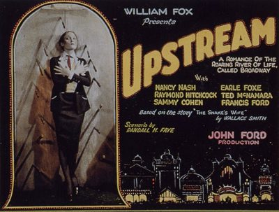

Upstream
Starring: Earle Foxe, Émile Chautard, Francis Ford
Director: John Ford
Writer: Randall Faye
Upstream is a 1927 American comedy film directed by John Ford. A "backstage drama", the film is about a Shakespearean actor and a woman from a knife-throwing act. The film was considered to be a lost film, but in 2009 a print was discovered in the New Zealand Film Archive. It is considered to be the first Ford film to show some influence of German director F. W. Murnau, who began working at Fox Studios in 1926.
Watch Online: Internet Archive
Previous Showings
1 Run • 1 Festival
All runs on record (1):
- November 22, 2015Fox Studios through 1935, including Silent Sundaysw/ The Iron Horse